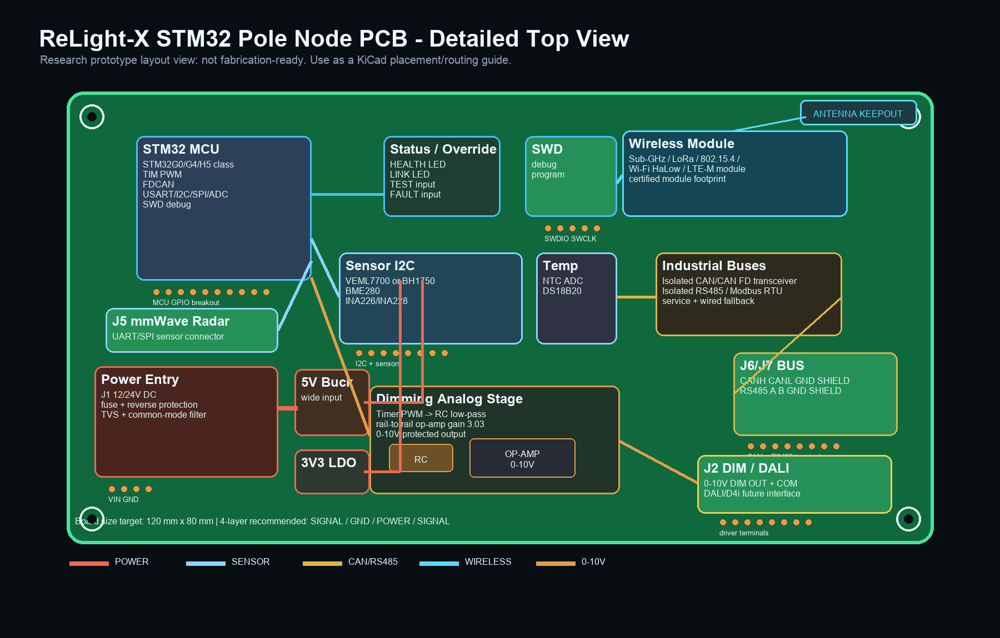
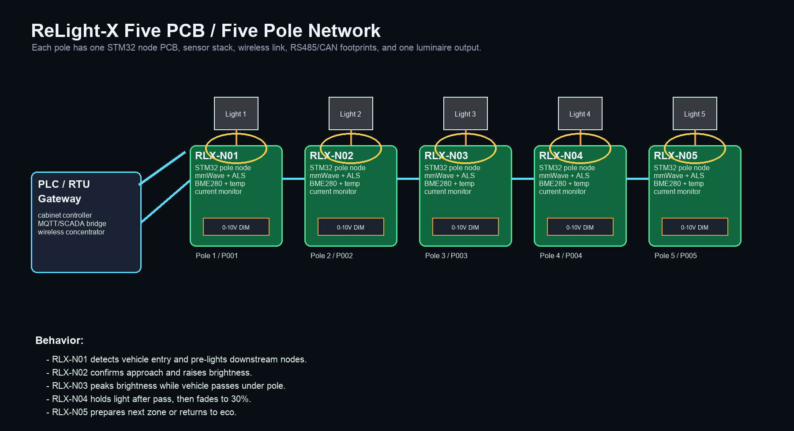

ReLight-X PCB Detail Viewer
These are detailed research/prototype PCB visuals, not fabrication-ready Gerber/KiCad outputs. Use them as a placement, connector, and architecture guide.
STM32 Pole Node PCB Top View
Shows MCU, wireless module, RS485/CAN, mmWave radar, ambient/environment/temperature/current sensors, power input, 0-10V dimming stage, and DALI/D4i future connector.

Five PCB Network
Shows five pole-node PCBs connected wirelessly to an industrial PLC/RTU gateway, each with its own luminaire and sensor stack.

Related files: board_design/bom.csv, board_design/pin_mapping.csv, board_design/five_node_board_map.csv.